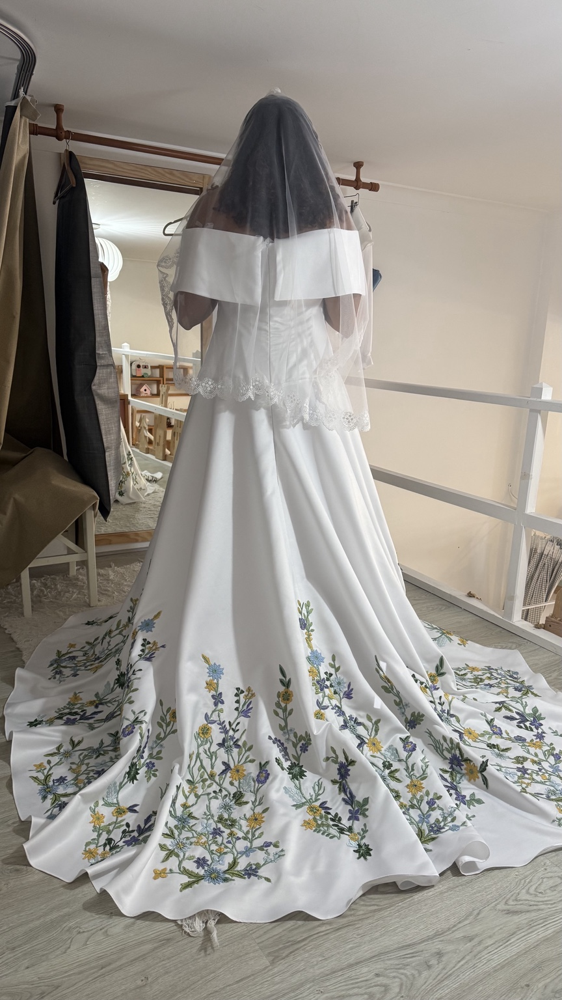
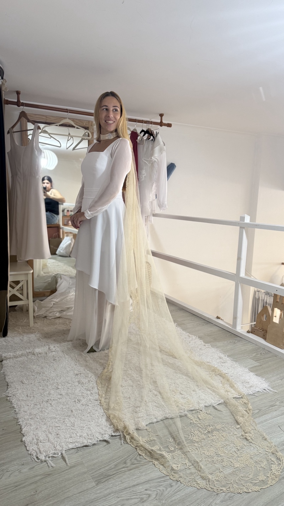
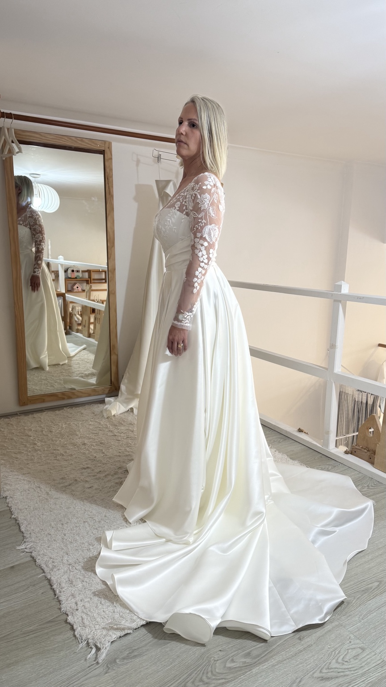

Noivas
Chaleur Fine
Vestidos de noiva com linhas sensíveis, detalhes delicados e possibilidade de adaptação.
Criações sob medida para noivas e cerimónia, construídas com tempo, proximidade e processos artesanais.
Vestidos de noiva com linhas sensíveis, detalhes delicados e possibilidade de adaptação.
Modelos para mães de batizado, com leveza, elegância e personalização de detalhes.

Criamos vestidos sob medida, com processos artesanais e o cuidado de antigamente.
Cada noiva é única, e cada criação nasce da sua essência — nunca de um molde pronto.
Para mulheres que valorizam o feito à mão, a exclusividade e a tradição.
É nas provas que o vestido ganha forma no corpo, nos gestos e na presença de quem o vai viver.



Depois do desenho, das escolhas, das horas de construção e das provas, chegam os últimos gestos.
Um ajuste delicado. Um acabamento feito à mão. O cair de uma saia. A colocação de um botão. A última prova diante do espelho. Está pronto para pertencer à sua noiva.


Cada criação encontra o seu verdadeiro significado quando é finalmente vivida. Aqui ficam alguns desses momentos — mulheres reais, histórias únicas e vestidos criados para fazer parte de uma memória que permanece.


Uma coleção pensada para valorizar a silhueta com precisão e revelar presença com delicadeza.
Quer conhecer todos os detalhes da Chaleur Fine?
Veja a coleção completa,
com todos os modelos e detalhes.

Silhueta evasé fluida com fenda frontal, decote em V traspassado e costas abertas. Delicado, gracioso e moderno.

Etéreo e romântico, com flores bordadas que envolvem o corpo com suavidade e uma feminilidade serena.

Decote quadrado, cintura marcada e saia ampla. Linhas puras e estrutura precisa num minimalismo refinado.

Decote em V delicadamente drapeado e saia ampla em camadas de tule leve, criada para movimento e suavidade.

Mangas de transparência subtil, desenho floral e silhueta limpa para uma presença elegante, calma e atemporal.

Suavidade, luz e feminilidade atemporal, inspiradas na textura suave e no brilho discreto da seda.

Sofisticação minimalista com decote ombro a ombro e modelagem sereia que desenha a cintura e o quadril.

Pureza e detalhe quase impercetível, numa composição em que o encanto nasce da harmonia das formas simples.

Renda floral translúcida que envolve o corpo com leveza, unindo romantismo contemporâneo e elegância suave.

Delicadeza e presença em equilíbrio, com rendas subtis e linhas que valorizam a feminilidade de forma natural.

Clássico, estruturado e marcante, com arquitetura cuidada e a imponência silenciosa das proporções clássicas.

Bordados delicados parecem florescer sobre o tule, entre o clássico e o contemporâneo, com leveza e feminilidade.

Estrutura limpa e movimento etéreo da saia criam uma presença sofisticada entre o clássico e o contemporâneo.

Silhueta clássica e contemporânea, com leveza atemporal, doçura e proporções delicadamente construídas.

Minimalismo romântico e escultural, com decote que valoriza os ombros e silhueta fluida, leve e feminina.
Todos os modelos da Coleção Chaleur Fine podem ser encomendados à distância, com possibilidade de envio.
Todo o processo pode ser acompanhado por videochamada, incluindo a orientação para a correta recolha das medidas da noiva.
Prazo de encomenda: os vestidos de noiva da coleção devem ser encomendados com uma antecedência mínima de 2 meses antes da data de envio .

A Coleção Pure nasce para acompanhar celebrações íntimas e especiais. Peças pensadas para mães que procuram leveza, elegância e a possibilidade de personalizar cada detalhe.
Modelos de cerimónia com possibilidade de personalização de cor, tecido e detalhes.


Confeção por encomenda — prazo de 15 dias antes do envio.
Os valores podem variar mediante modificações.
Experiências de clientes que passaram pelo atelier.
Veja as avaliações e experiências partilhadas por quem já passou pelo Atelier Priscila Duarte.
Ver no Google MapsSim. O atendimento é com marcação, para haver tempo para cada pessoa. Marque pelo WhatsApp (925 941 571) ou pelo formulário desta página.
Depende do vestido: do modelo, do tecido e das alterações que pedir. Peça-nos um orçamento pelo WhatsApp e conte o que procura.
Pode. Os modelos da Chaleur Fine aceitam alterações — diga-nos o que mudava. E o vestido é sempre feito com as suas medidas.
Depende do vestido. Diga-nos a data logo na primeira mensagem e combinamos o calendário das provas consigo. Já fizemos vestidos com pouco tempo, mas isso vê-se caso a caso.
Não. Também criamos vestidos de cerimónia (incluindo mãe e filha, para casamentos e batizados), damas de honor, transformações e ajustes de cerimónia.
Sim. Fazemos transformações e ajustes de cerimónia, incluindo vestidos de noiva.
Outra dúvida? Pergunte pelo WhatsApp.
Preencha a sua ficha. Ao enviar, será aberta uma conversa no WhatsApp do Atelier Priscila Duarte com o resumo dos seus dados, modelo escolhido e data da cerimónia.